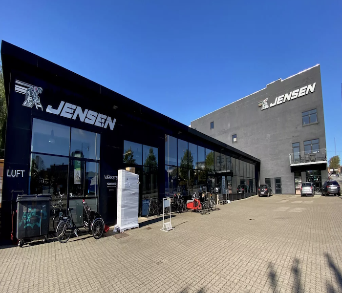

Vi er vokset til en af de største og førende cykelbutikker i Danmark.
Vores 1600m2 store butik er altid fyldt med cykler i højeste kvalitet.
Vi har et bredt sortiment som strækker sig fra børne cyklen, helt op til cyklen som den
proffesionelle cykelrytter bruger.
Vi er blot 1 ud af 4 Specialized EL-Cykel testcentre i Danmark.
Vores mission er give dig service og produkter i høj kvalitet.
Vores vission er at alle i Aarhus skal have muligheden for få en fantastisk køreoplevelse.
Vores værdier er skabt fra et ønske om høj kvalitet.

Hvorfor skal du vælge os?
Vi er en top proffesionel virksomhed som gennem mange års erfaing, har opbygget en masse
know-how.
Vi har cykler til alle, og kan vejlede dig til den rigtige beslutning.
Vi har de bedste og top kvalificeret personale i butik, og i vores værksted.
Vi er altid klar til at se på din cykle, og yde en god service.
Shimano Service Center som er et unikt koncept udviklet til at yde professionel service til
cyklister i hele Europa. Vi bruger viden og kompetencer som er blevet dannet over hele Europa.
Som en lille bonus tilbyder vi gratis luft 24/7 hele året rundt, fra vores ventil udenfor vores
butik.